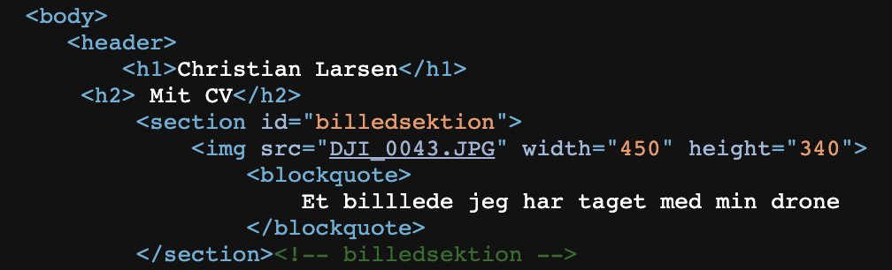

Html var det oprindelige kodesprog.
Html er det der er strukturen for en hjemmeside, hvor Css er til at designe.
Dog startede html med at både være strukturen og designet, det var begrænset og forskelligt fra browser til browser.
"head" er metainformation om siden, der ikke vises på siden.
"body" er selve sidens indhold.
"h1" og "/h1" afgrænser et html element.
Opbygning for et HTML element er således at du starter med dit "start tag" som kan være h1, img eller noget tredje.
Efterfulgt af en attribut navn som kan være id, class osv. Herefter kommer din valgte tekst også kaldet "value"
Herefter kommer dit slut tag som du også startede med.
Indrykning af kode i din editor er god kodeskik, det giver et større indblik for dig selv og andre der skal læse din kode.
Header svarer til et sidehovede i et word dokument.
Der kan være flere headere på en side, men så er det opdelt i hver sin "section".
Footer er også et semantisk tag og minder om header, men er istedet mere en sidefod. I footer har man som regel copyright og kontakt informationer.
En editor er et program med ren tekst uden formatering af nogen art.
Jeg anvender microsoft visual studio code da det er gratis og let tilgængeligt.
Der findes mange andre alternativer.
Dette "tag" fortæller at alt der er imellem høre sammen og har dermed betydningen (se4mantisk).
Der kan være flere headers på en side, typisk i hver sin section.
Article og Aside minder meget om section.
Min første html side omhandlede mit cv vi skulle lave.
Der kom smæk på farverne hvor farve koden til den oprindelige røde farve i dania logoet blev brugt til baggrund.
Der var mange problemer med at få det hele lagt over på serveren, men efter en grundig snak med Niels, kom der styr på det.
